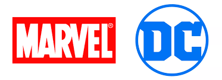
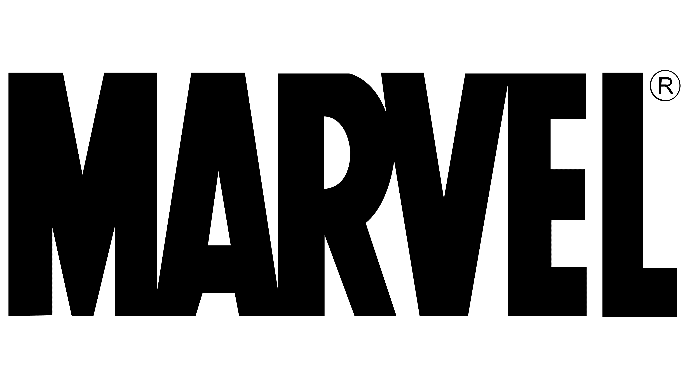
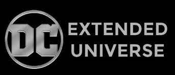

Marvel was started in 1939 by Martin Goodman as Timely Comics,[3] and by 1951 had generally become known as Atlas Comics. The Marvel era began in June 1961 with the launch of The Fantastic Four and other superhero titles created by
Stan Lee, Jack Kirby, Steve Ditko and many others. The Marvel brand, which had been used over the years and decades, was solidified as the company's primary brand. Marvel counts among its characters such well-known superheroes as Spider-Man, Iron Man, Captain America, Thor, Doctor Strange, Hulk, Daredevil, Wolverine, Black Panther, and Captain Marvel, as well as popular superhero teams such as the Avengers, X-Men, Fantastic Four, and Guardians of the Galaxy. Its stable of well-known supervillains includes the likes of Doctor Doom, Magneto, Ultron, Thanos, Kang the Conqueror, Green Goblin, Red Skull, Galactus, Loki, and Kingpin. Most of Marvel's fictional characters operate in a single reality known as the Marvel Universe, with most locations mirroring real-life places; many major characters are based in New York City, New York, United States.[4] Additionally, Marvel has published several licensed properties from other companies. This includes Star Wars comics twice from 1977 to 1986 and again since 2015.
DC Comics is one of the largest and oldest American comic book companies, with their first comic under the DC banner being published in 1937.[8] The majority of its publications take place within the fictional DC Universe and feature
numerous culturally iconic heroic characters, such as Superman, Batman, Wonder Woman, Flash, Aquaman, Green Lantern, and Cyborg; as well as famous fictional teams including the Justice League, the Justice Society of America, the Justice League Dark, the Doom Patrol, and the Teen Titans. The universe also features an assortment of well-known supervillains such as Lex Luthor, the Joker, the Cheetah, the Reverse-Flash, Black Manta, Sinestro, and Darkseid. The company has published non-DC Universe-related material, including Watchmen, V for Vendetta, Fables and many titles under their alternative imprint Vertigo and now DC Black Label. Originally in Manhattan at 432 Fourth Avenue, the DC Comics offices have been located at 480 and later 575 Lexington Avenue; 909 Third Avenue; 75 Rockefeller Plaza; 666 Fifth Avenue; and 1325 Avenue of the Americas. DC had its headquarters at 1700 Broadway, Midtown Manhattan, New York City, but DC Entertainment relocated its headquarters to Burbank, California in April 2015.[9]| N.K | Name | Movie | Older | Latest Movie | Cartoon | tv show | kinds of movie | First movie | One of the best movie | strong hero | total super heros in the movie | Dangerous villain |
|---|---|---|---|---|---|---|---|---|---|---|---|---|
| MCU | Marvel cinematic | 32+ | 84+ year | Guardians of the Galaxy Vol. 3 | What if..., I Am Groot | what if/she Hulk: Attorney at Law/Loki/Agent Carte/Falcon And The Winter Soldier/Luke Cage/Agents Of S.H.I.E.L.D./Jessica Jones/Ms. Marvel/Daredevil/The Defenders/The Punisher/WandaVision/Hawkeye/The Guardians of the Galaxy Holiday Special | cinematic | Howard the Duck | Avenger End Game | Captain Marvel,Thor | 8000+[with comics] | Thanos, Ultron, Kang the Conqueror |
| DCEU | Distractive comic's | 23+ | 86+ year | The Flash(2023) | Teen titance go,Batman: The Brave And The Bold (2008) ... | The Flash/Lois & Clark/Powerless/Titans/Black Lightning/Krypton/Preacher/Lucifer/DC's Legends of Tomorrow/Supergirl/Constantine/Gotham/Arrow/Adventures of Superman/Batman/Swamp Thing/Shazam!/Legends of the Superheroes/Superboy/Birds of Prey | Detective | Superman and The Mole Men (1951) | The Dark Knight | super man, Aquaman | 1oooo+[with comics] | Dark Side, Doomsday, Trigon |
| CBC | colombia studio's | 3000+[with all movies, not only just superhero bass movies] | 90+ year | Spider-Man: Across the Spider-Verse (2023) .. | spider verce | Spidey and His Amazing Friends (2021)/That's My Mama/The Equalizer/Annie/Ghostbusters 1984 present/City Slickers/Marvel Cinematic Universe/Sony's Spider-Man Universe/The Karate Kid/Boston Blackie/Cantinflas films | Lite Dark | spider man(1977,as a superhero)ore to Be Pitied Than Scorned on August 20, 1922. | Spider-Man 2 (2004) | Spider-Man, Spencer[from:Jumanji] | 30+[from movie like spider man, Jumanji, Morbius] | Van Pelt(Jumanji), Kraven the Hunter(from spider-man) |
Columbia Pictures Industries, Inc. is an American company that produces movies and at one time, television shows. It is now one of the "Big Five" American movie studios and the oldest, busiest and most well-known member of the Sony Pictures Motion Picture Group, which is owned by the Japanese company Sony. Sony Pictures also includes smaller studios like TriStar Pictures, Screen Gems, and Sony Pictures Animation. The studio buildings are located at the Sony Pictures Studios lot in Culver City, California.

Universal Studios Florida is a theme park located in Orlando, Florida, that opened on June 7, 1990. Owned and operated by NBCUniversal, it features numerous rides, attractions, and live shows that are primarily themed to movies, television, and other aspects of the entertainment industry. Universal Studios Florida was the first of three theme
parks to open at Universal Orlando Resort, joined later by Islands of Adventure in 1999 and Volcano Bay in 2017. In 2019, it ranked eleventh in the world – sixth in North America – for overall attendance among amusement parks with approximately 10.9 million visitors. The success of its sister location, Universal Studios Hollywood, in the 1980s fueled the desire to build a similar park in the Orlando area to compete with Walt Disney World. Two of its early projects were partially developed by famed Hollywood director Steven Spielberg, and many themed attractions over the years were developed in close collaboration with the directors, producers, and actors of the films they are based on. An early layout and design of the park also incorporated active production studios, similar to the Hollywood location, which provided guests a behind-the-scenes look at film and television. As the interest to produce films in the Orlando area quickly faded, the design of the park transitioned to a more immersive, first-person perspective. Universal Studios Florida operates a well-known annual event during the fall season called Halloween Horror Nights, where the park transitions to a Halloween theme featuring haunted houses and scare zones on select nights. One of the park's biggest draws is Diagon Alley, a Harry Potter-themed portion of the The Wizarding World of Harry Potter that opened in 2014. Other notable attractions include E.T. Adventure, which debuted with the park's grand opening in 1990, Men in Black: Alien Attack, as well as roller coasters Revenge of the Mummy and Hollywood Rip Ride Rockit.